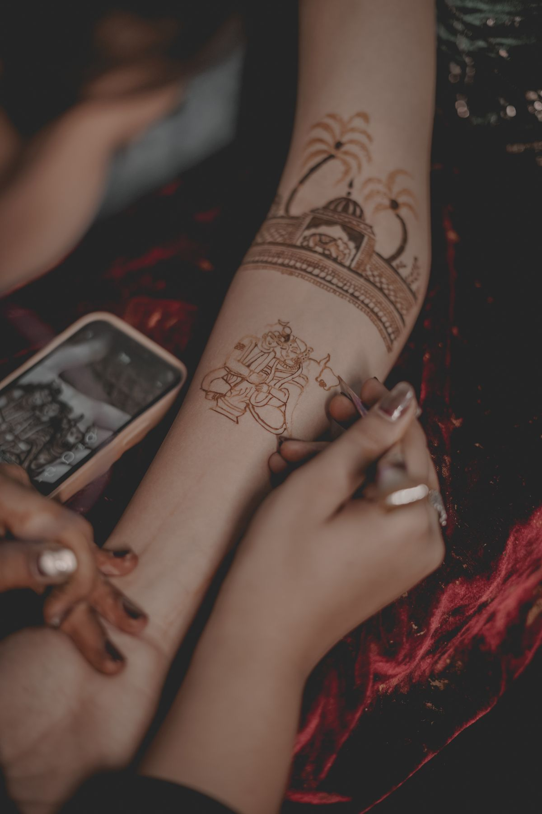
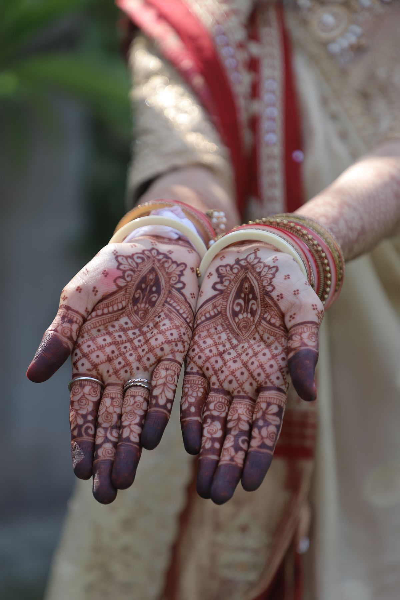
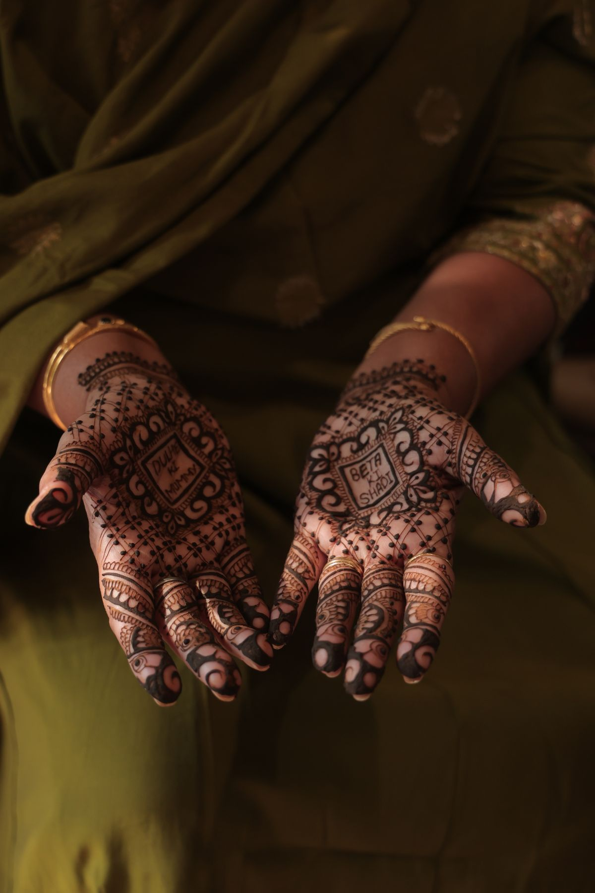

Names & hidden initials — the thumb
The groom's initial, worked into a vine where only a patient search finds it. Half the wedding guests will spend the evening looking.
In every bridal sitting · about 2 minutes an initial
Natural henna only. Bridal sittings are taken two days before the wedding — the stain needs its 48 hours.
Mehndi artist · Johari Bazaar, Jaipur
I am Zoya Ansari. My year in Jaipur runs from Teej — when the city turns green, the swings go up, and the queue at my table forms before breakfast — through Eid and Karva Chauth to the wedding season's long bridal sittings. Everything is drawn freehand, from a cone I rolled that morning.
The hand, mapped
A bridal hand is not one design. It is six decisions, one per zone — read the hand above, then read what each number means.
The groom's initial, worked into a vine where only a patient search finds it. Half the wedding guests will spend the evening looking.
In every bridal sitting · about 2 minutes an initial
The keri, the mango paisley, is the oldest shape I know. It carries the finger and repeats down into the palm, smaller each time.
From ₹450 a hand · 20–40 minutes a hand
The tallest finger gets the bird with the longest neck. A peacock asks for a steady cone and no conversation for ten minutes.
Bridal centrepiece · adds about 35 minutes
The vine is the joiner. It runs from the ring finger into the palm and ties every other motif into one design instead of five.
Priced inside the sitting · drawn freehand, never stencilled
Small flowers, dots and one clean paisley: the Teej and Eid work. Quick, joyful, and gone in a week — which is the point of it.
₹250 a guest · about 12 minutes each
The bride and groom themselves, drawn last, in the centre of the palm, from a photograph you bring. The part of the design everyone photographs.
Full bridal only · drawn at the end of the sitting
Fresh off the cone



Watch a hand fill in
Scroll, and the cone does its work — the same order I draw in at a sitting. Bands first, then the big shapes, then the vines that join them, then the picture in the palm.
Pattern drawn. In the studio this takes about three hours and one very patient bride. Here it takes one scroll.
Three sittings
“She told my mother the date was wrong before she told her the price — 'your daughter sits on Thursday, not Friday, or the colour won't be ready.' She was right about both.”
“The mehndi queue became the party. People compared paisleys like scores. Nobody waited, nobody was missed, and my grandmother still shows strangers her peacock.”
“Zoya drew my daughter's first Teej hand and my mother's sixtieth in the same morning, same design, same care. That is why the courtyard books her before the swings go up.”
The signature tool
Every figure below comes from the rate card printed beside it — the same card that hangs in my studio. Choose the coverage, the density, and how many sangeet guests; the planner counts the minutes, the cones and the rupees, and checks your date against the 48-hour rule.
Default: the classic bridal sitting — hands to the elbow, classic density, no guests.
The 48-hour rule: henna peaks two days after it is applied. Pick your event date and I will tell you honestly whether the colour can be ready.
| Coverage (both hands) | Sitting, classic density | Cones | Price |
|---|---|---|---|
| Palms only | 45 min | 1 | ₹900 |
| Hands to the wrist, front & back | 90 min | 2 | ₹1,800 |
| Hands to the elbow (bridal) | 180 min | 4 | ₹3,600 |
| Hands to the elbow + feet | 240 min | 5 | ₹4,800 |
| Sangeet guest motif | 12 min each | 1 per 6 guests | ₹250 each |
Density moves the card like this: light work takes 0.7× the time and 0.8× the price; dense bridal takes 1.4× the time and 1.5× the price. Cones follow the paste, rounded up. The planner does this arithmetic for you — and it is a planning figure, not a bill: the sitting is confirmed on the booking page.
Tell me the wedding, the Eid, the Karva Chauth — I will count backwards two days and bring the cones.